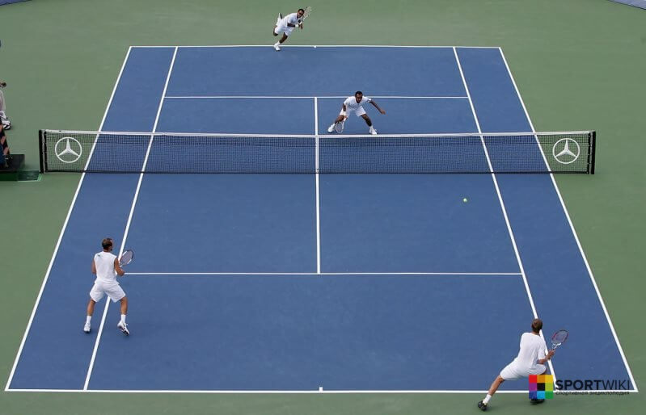

На данной странице вы найдёте информацию о главных теннисистах России, об их титулах и наградах, о турнирах о которых они участвовали и каких соперников побеждали!
Те́ннис(англ. tennis) или большо́й теннис — вид спорта, в котором соперничают либо два игрока («одиночная игра»), либо две команды, состоящие из двух игроков («парная игра»).
Задачей соперников — тенниси́ста или тенниси́стки — является при помощи ракеток отправлять мяч на сторону соперника так, чтобы тот не смог его отразить, не более чем после первого падения мяча на игровом поле на половине соперника.
У современного тенниса в английском языке есть официальное название ла́ун-теннис (англ. lawn [lɔːn] «лужайка») для отличия от реал-тенниса (или жё-де-пом во французском варианте названия) — более старой разновидности, в которую играют в закрытых помещениях и на совершенно другом типе корта.
Уже в 1875 году разработанные Уингфилдом правила были изменены; новый свод правил был разработан в Марилебонском крикетном клубе. В июле 1877 года в Уимблдоне был проведён первый турнир по лаун-теннису, организатором которого был Всеанглийский клуб лаун-тенниса и крокета (англ. All England Lawn Tennis and Croquet Club). Участники должны были заплатить вступительный взнос в размере одного фунта и одного шиллинга, а зрители платили за билеты по одному шиллингу. Турнир был открыт для всех желающих (всего участвовали 22 человека), приз победителю стоил 12 гиней, и кроме того разыгрывался серебряный кубок ценой 25 гиней. В 1884 году в рамках Уимблдонского турнира были впервые проведены женский турнир (хотя уже за пять лет до этого женщины разыгрывали чемпионат Ирландии) и мужской парный турнир, а в 1913 году к ним добавились соревнования женских и смешанных пар (микст). В 1888 году была основана Ассоциация лаун-тенниса (англ. Lawn Tennis Association, LTA), которая в последующие годы установила сорок три правила игры, многие из которых действительны до сих пор, и утвердила проведение 73 турниров в течение десяти лет.
Ссылка на ВикипедиюИгроки или команды должны находиться по разные стороны сетки. Один из игроков является подающим, второй, соответственно, принимающим подачу. Подающий игрок должен отправить мяч таким образом, чтобы он попал в зону корта на половине соперника. Принимающий игрок должен успеть перенаправить (отбить) мяч на сторону соперника до его падения на корт или до того, как он коснется корта во второй раз. Если один из теннисистов пропустил мяч, то его соперник получает очко.
• Побед на турнирах серии Masters: 1 (Париж)
• Побед на турнирах серии ATP 250: 3 (Кубок Кремля, Марсель, Чэнду)
На этой позиции мог оказаться и напарник Карена — Андрей Кузнецов, но у него нет побед на крупных турнирах, а Хачанов к 24 годам выиграл BNP Paribas Masters в Париже, одолев в финале самого Новака Джоковича. По этой же причине мы не можем добавить в список Дмитрия Турсунова. Победа Хачанова оказалась первой для российских теннисистов на турнирах серии Masters за девять лет.
Лучшее место в карьере: 8 (ноябрь 2020)
• Побед на турнирах серии ATP 250: 4 (Умаг, Кубок Кремля, Аделаида, Доха)
• Побед на турнирах серии ATP 500: 3 (Вена, Санкт-Петербург, Гамбург)
Рублев провел свой лучший сезон в карьере, отобрался на Итоговый турнир в Лондоне, в этой ситуации количество может быть важнее качества. В нашем топе уже второй действующий спортсмен. Победа на трех турнирах серии ATP 500 и пять титулов в одном календарном году — это большой прогресс для молодого теннисиста.
• Лучшее место в карьере: 8 (сентябрь 2008)
• Побед на турнирах серии ATP 250: 8 (Штутгарт, Санкт-Петербург, Ченнаи, Кубок Кремля, Куала-Лампур, Загреб, Гштаад, Мюнхен)
• Побед на турнирах серии ATP 500:2 (Роттердам, Валенсия)
• Побед на Кубках Дэвиса: 2 (2002 и 2006)
Южный — один из представителей сборной, кто смог не только привезти Кубок Дэвиса в Россию, но и через четыре года выиграть его повторно. Собственно, поэтому он оказался в рейтинге выше тех, кто выигрывал турниры престижнее. С 2019-го Михаил является тренером канадского теннисиста Дениса Шаповалова.